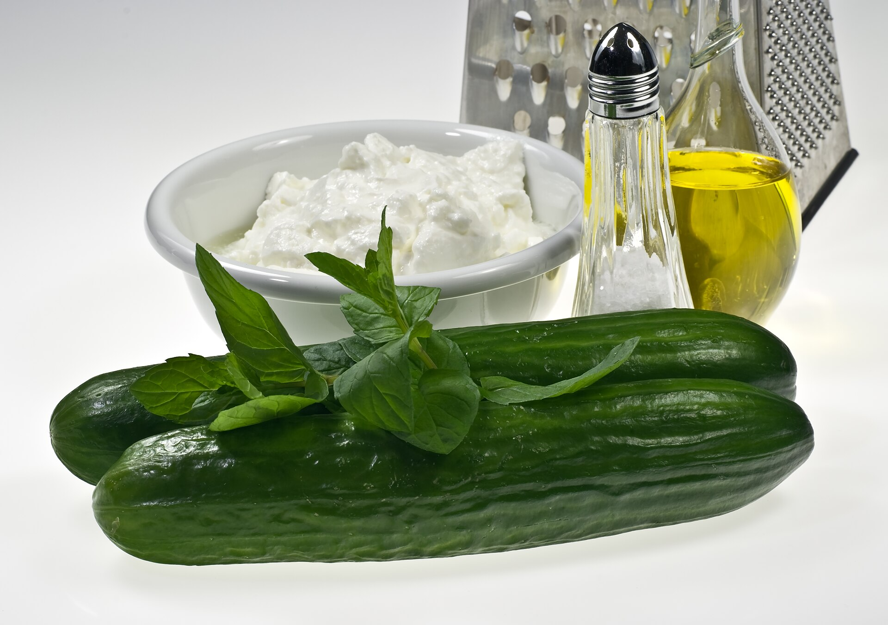

Tzatziki
Story: Always served with warm pita. Yiayia said it should be thick and creamy.
Ingredients
- 2 cups Greek yogurt
- 1 cucumber, grated and drained
- 3 cloves garlic, minced
- 2 tbsp olive oil
- 2 tbsp lemon juice
- Fresh dill, salt
Instructions
- Grate cucumber and squeeze out excess water in a clean kitchen towel
- Mix yogurt, cucumber, garlic, olive oil, and lemon juice in a bowl
- Season with salt and chopped dill
- Refrigerate for at least 1 hour before serving
- Serve chilled with pita bread or grilled meats